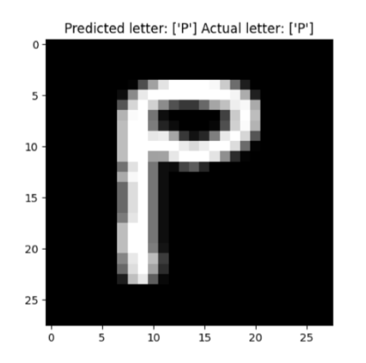
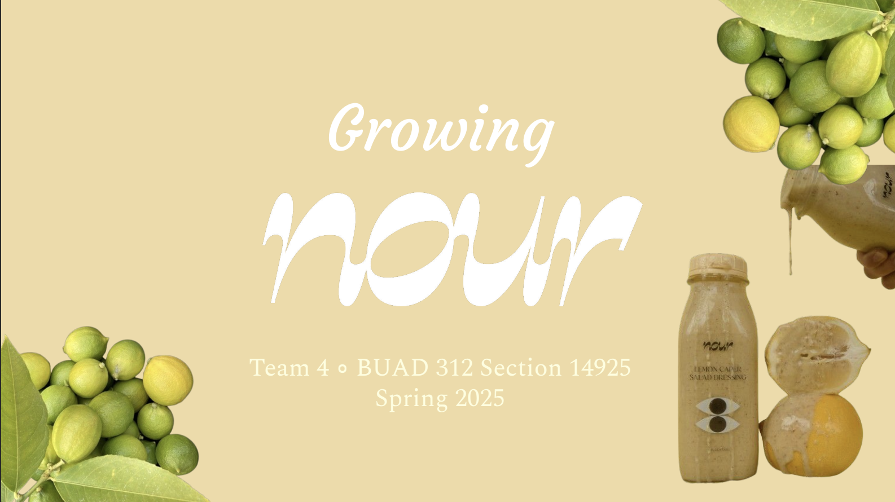
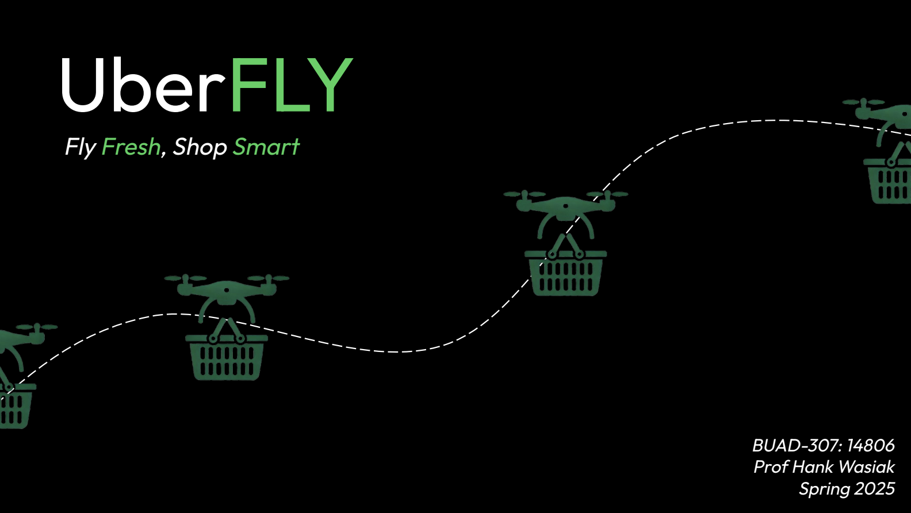
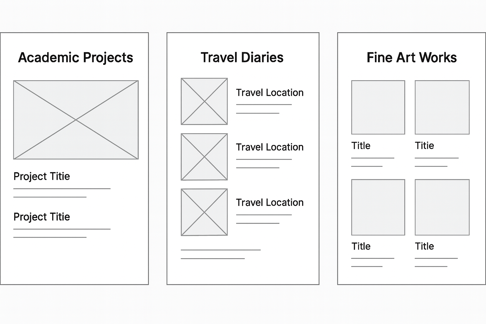

Projects are grouped loosely into data and analytics, marketing strategy, and design/web work.
Data & Analytics analysis & modeling

Handwritten Latin Digits: Training Neural Networks
Design and train a neural network to classify handwritten Latin letters A-Z
(capital letters) using MLPClassifier from scikit-learn. Compare performance
against logistic regression and analyze model trade-offs.
Tools: scikit-learn, logistic regression, neural networks
classification
model selection
trade-offs
View code →

Nour: Data-Driven Launch Strategy
Analyzed customer transaction data for Nour, an LA-based CPG startup, to recommend which
channels and flavors to prioritize in an upcoming product launch. Construct new product launch and scaling strategy for retail and wholesale channels.
Tools: Excel, R, Python, Hypothesis Testing
CPG
customer data
strategy
Read business recommendations→
Marketing & Strategy decks & case work

UberFLY: Grocery Drone Delivery Pitch
Ideated UberFLY, a grocery drone delivery extension of Uber Eats and Uber. Built pitch deck
covering market sizing, customer personas, and a phased launch plan.
Tools: Figma, PowerPoint, Market Research
market research
go-to-market
customer personas
Flip through the deck →

Home From College: Digital Internal Debrief
As a Digital Strategist in Trojan Marketing Group, helped analyze a semester-long campaign,
identifying which content pillars and platforms drove the most engagement.
Tools: social analytics, content audit, competitive research
digital marketing
content strategy
See key campaign insights →
Design & Web interfaces & experiments

Cafe Jamie Homepage Wireframes
Iterated low-fidelity wireframes for this site, experimenting with how to
balance cafe aesthetics and clear navigation utilizing inspiration from key brands I admire.
Tools: pen & paper, Figma
wireframing
UX thinking
View wireframe set →

Interactive Photo Gallery
Built an overlapping image gallery using HTML and CSS effects to craft interactive photos that fan out on hover,
practicing transitions, transformations, and responsive layouts.
Tools: HTML, CSS, Flexbox
front-end
animation
See interface details →
{kind=link}